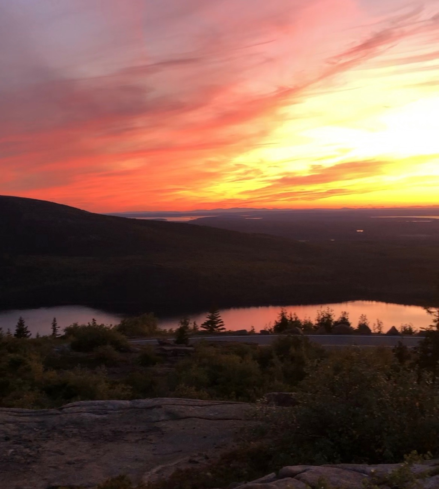

hi, these are pieces I've created- some based off of existing works, and others i've conjured up on my own. i am not fully sure what I want this space to be but for now sharing some color, shapes, and thoughts :)

The progression of drawing a scene from Royal Arch Trail in Chautaqua Park - Boulder, Colorado. The arch reveals itself at the peak of the hike. - I started with a pencil sketch to give myself some guidelines and then dropped in the color. I like adding ink outlines over the watercolor for a more sharp and abstract look. It also helps give a level of dimension that I am unable to get with watercolor right now. (5.7.2022)

The Narrows in Zion National Park, Utah. This hike runs through the narrowest section of Zion Canyon. This has been my favorite hike that I have ever done. Looking through my cellphone camera roll, old photos of this hike always catch my eye. The walls and water of the gorge seem unreal as they glow and shimmer when the sun hits from different angles. I tried to capture that orange glow in the back wall of this watercolor. (5.5.2022)
This sketch is from a shikara ride on Dal Lake (Srinigar - Jammu and Kashmir, India).
A shikara is a long wooden boat made of Himalayan cedar. Most tourist shikaras are decked out
with colorful cushions, curtains, and paint. Some are also much larger and are used as house
boats on the edge of the lake.
My mom used to visit Kashmir every summer before college with her family and this was one of
her favorite experiences. I visited for the first time in April 2022 and couldn't miss the
boat ride. I drew this small sketch for my mom. (4.23.2022)


A pencil sketch of our hiking shoes and bucket hat that we left on the shore as we explored around Sand Beach - Acadia National Park. (4.25.2022)


My favorite part of camping is campfires and tents with no top. I took the photo on the right in the morning after waking up to the light pouring into the tent through the trees. Getting back into pencil sketches.(03.2022)
 33
33
This is the first piece I ever drew that classified as “art” to me. It was an assignment as part of drawing lessons I took when I was younger. An exercise in shading and texture. It is based off a photograph of an old man’s eye with an eyebrow that now does not seem bushy enough. (2013)


I painted both these pieces during the first year of Covid. I thought it would be fun to try painting with acrylics on canvas. (It was not very fun or forgiving). I wanted to capture moments that make the world feel very still and make you feel very open. Getting lost in music that I enjoy or the moment when you dip below the surface of water in the pool before swimming gives me this feeling. Naming paintings seems too real and meaningful so I never have. But the one on the left I’d name “High Fidelity” - it’s my version of Zoe Kravitz walking the streets of New York with her headphones on. (2021)


I read the Omnivore’s Dilemma by Michael Pollan this year. As a result, I am anti corn and actively drawing farm animals. These were all small sketches and a stepping stone to trying + learning watercolors. (02.2022) ~I highly recommend the read!~

Pen Ink Scribble Drawing (05.2021)

All three photos are focused shots of the same drawing.

This reminds me of the drawings in The Giving Tree.


The photo on the left are color stains from playing Holi - it looked like the closed feathers of a peacock.
Miscellaneous things